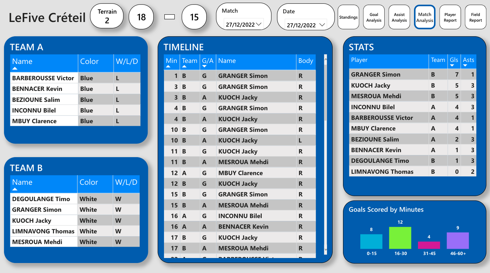

September 14th 2022. LeFive Créteil. Field n°4. 10-8. That day was the first game since when I started this project. Since this game, I have been collecting data from each of my 5-a-side weekly football games with the aim of analysing and tracking the performance of each player.
Thanks to the game videos offered by LeFive, I wondered if I could analyse my own games in more details rather than just looking back at the videos and seeing who scored during a single game. At the same time, I was learning how to use Power BI and needed some real data to properly start using it. This was a perfect match. I had an angle of study, data available and a new tool to discover.
What's the target ?
As I said before, LeFive provides us a one-angle video of each game and a score sheet where you have all the goalscorers and videos of each goal when clicking on the minute at which the goal was scored. We are able to know who scored the goal as we select on a tablet which player scored so that the scoreboard is updated while we play. Something to take into account is that the videos are available around 3 months and are deleted after.
In the videos, we have a view from one corner of a field which allows us to observe the build-up of each goal. Thereby, there is a lot of information to learn from these videos. We can easily with which foot the player scored with, was it his preferred foot, who assisted the goal and with which foot. Therefore, thanks to these videos, I was able to manually collect various data about our games in a Google Sheets and then use them to build a report with multiple analysis axes.
The camera recording the game is located in one corner of the field. Therefore, it can be hard to see goals scored in the opposite side of the field but until now, I was always able to retrieve the information needed. Here is what the videos look like :
Adding the assists is interesting, but what about the most important statistics in football ? Yes, did you win the game in the end ? By collecting these stats, we easily know which players won and who lost. Another objective was to establish different rankings to see which players won the most, scored the most or assisted the most. This would give an overall view of a player's contribution rather than having single games observations which wouldn't be representative of a player's impact. We would see who is the Cristiano Ronaldo or the Kevin de Bruyne among our group of friends.
"It would be cool to also have the assists."
When creating the dashboard, I had different lines of thinking which would become the different pages in my dashboard. I wanted to have multiple pages which would allow me to answer questions such as "Do I score a lot with my weak foot ?", "Is there a curse field ?", "Am I on a loosing streak ?", "Do I score more during the first half of a game ?". All these questions shaped my dashboard and the visuals that I built.
Standings
In this page, I wanted a simple view on the players who won the most games, the top scorers and the players with the most given assists. As I started this project in October, I couldn't get the assists for the two games played in September because the videos were not available anymore. To be able to have a representative visualisation for each table, I added the win percentage, the goals per match and assists per match ratios so that the players with the best percentage/ratio would be featured.
Goal Analysis
In this second page, I wanted a focus on the goals scored during the game, see the best scorers overall and during a single game. I also took a look at the goal distribution by body parts and by quarters of the game as we usually play 1-hour games. The last visual allows me to see how much goals we scored at each game.
"Who scored the most during a single game ? And how much did he actually score ?"
These visuals allow me to see how the average number of goals per game but also to see if some games can be considered as outliers and, in reality there are a lot. We can see that sometimes, there are a lot more goals than the average but, the opposite is also true. This can be explained by some games lasting shorter due to players coming late to the game or just because strikers were in great form during a game.
Another interesting fact is to see in which quarter do we have the most or the least goals scored. Due to the intensity of the games, players tend to defend more in the beginning of games. That is why we have the least goals scored in the first quater while we see a lot more goals during the rest of the games when players slow down to catch their break, and be ready for the money time.
Assist Analysis
On the Assist Analysis page, we find the same pattern as in the previous page. We can draw similar conclusions on the quarter distribution of assists where we see that in the first quarter, players tend to assist less than in the other quarters. This could be the the result of different factors such as players defending more, having more energy to score goals on their own or simply being more selfish trying to boost their personal stats.
When looking at the assists' body distribution and comparing it to the goals' distribution fact, we can notice an intriguing fact in the percentages. We have the exact same distribution between right and left foot in both graphs. You may be wondering why there is so much O assists (standing for "Other"), and it is because assists given by goalkeepers with a throw are labeled O while the H label is for "Header".
Match Analysis
This page allows us to have a detailed look at a specific game choosen thanks to the two slicers at the top. It gives us the make-up of both teams, the teams' color and the result for each team. The timeline allows us to see how the game went, at what minute did someone score and if there was an assist or not. We get the individaul stats for each player in a table visual and a little column chart to see how the game evolved according to goals scored.
After each game played, after collecting the stats in my Google Sheets, I usually share a copy of this page, alongside the standings page, to my Messenger group where everyone can have a quick insight of how the game went and decide who was the MVP of the game.
Player Report
The Player Report gives us a complete insight on how a player performs. I displayed severals KPIs that gives us an overal view of the player's wins, goals and assists. For each player, I retrieved their preferred foot to see how good or not a player is with both feet. Some players may be comfortable when shooting or passing with their wrong foot and some may not. A key indicator on how great a player is is his ability to step up when his team needs him.
"Big time players make big time plays in big time games." - Santana Moss, NFL Player.
Usually, we try to build balanced teams so that games are closely fought and the ending thrilling. A majority of our games are decided in the last 10 minutes, with at most a 1 or 2 goals difference. Consequently, seeing if a player scores a lot at the end of his games can tell us how valuable he can be once on the field.
In the most recent version of the dashboard, I added a table visual showing the last results of the player chosen and his statistics in these games. Some players used to tell me "It's been a long time since I won" and, I couldn't answer this questioning before creating this visual. Now, I can easily see if a player is on a good run or on the contrary, on a bad momentum.
Field Report
"Field number 3 is cursed. I never win when playing on field 3."
Finally, the idea for this last page came from a discussion with one of the player who said that he never performed well when playing on specific fields. Therefore, I calculated statistics by field in order to see the players with the most wins, goals and assists for each field. In the end, some supposition were proven wrong thanks to the stats and some were proven right.
Something to consider is the fact that some field have some distinctive characteristics such as the size of the pitch depending of the location. Some fields are wider, some are more exposed to the cold or the heat which makes them more or less suited to the strenghts and weaknesses of some players.